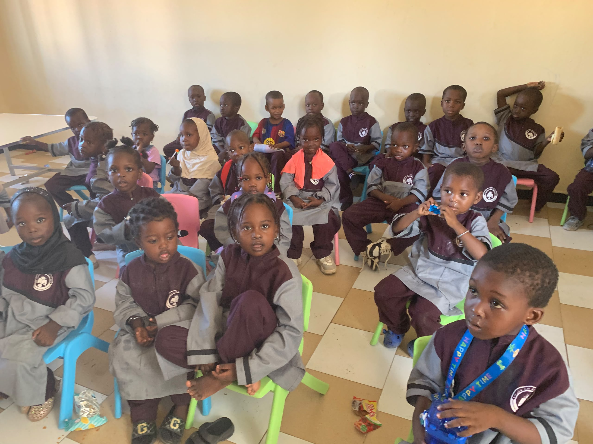
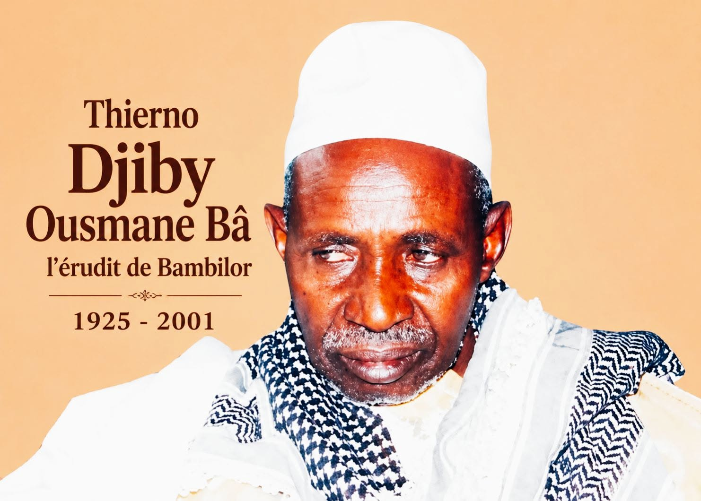

Notre mission
Offrir à chaque enfant, du préscolaire à la terminale, une formation qui associe réussite scolaire, maîtrise du français et de l'arabe, et solide éducation islamique.
L'excellence au service de la réussite
Une éducation de qualité, entre savoirs modernes et valeurs islamiques.
L'Institut Al Maarifa Thierno Djibril Ousmane Ba est né de la volonté de proposer, à Bambilor - Darou Salam, une alternative éducative exigeante : un enseignement général de qualité, une maîtrise réelle de la langue arabe, et une éducation islamique authentique transmise avec pédagogie.
Nous accueillons les élèves du préscolaire à la terminale dans un cadre structuré, où la discipline, la propreté et la sécurité ne sont pas des options mais des fondations.
Voir nos programmes
Concilier excellence académique et éducation religieuse : ce qui guide chaque jour le travail des enseignants, de l'administration et des élèves.
Offrir à chaque enfant, du préscolaire à la terminale, une formation qui associe réussite scolaire, maîtrise du français et de l'arabe, et solide éducation islamique.
Former des générations instruites, responsables et enracinées dans leurs valeurs, capables de relever les défis du monde contemporain et de servir leur communauté.
Un enseignement exigeant qui prépare les élèves à réussir dans le supérieur comme dans la vie.
Un cadre structuré, respectueux et sécurisant pour chaque élève.
Une éducation religieuse authentique, transmise avec pédagogie et douceur.
Des méthodes actuelles, une bibliothèque numérique et un suivi pédagogique moderne.

Le premier cycle du parcours, dans un cadre structuré, propre et sécurisé.

La suite du parcours : enseignement général, français et arabe.

Un cycle qui poursuit le parcours : enseignement général, langue arabe et éducation islamique.

Le dernier cycle, jusqu'à la terminale, pour préparer la suite des études.
Développer les connaissances, les compétences et la réussite scolaire.
Valoriser l'apprentissage et la maîtrise de la langue arabe.
Promouvoir l'éducation morale, spirituelle et les valeurs islamiques.
Développer la discipline, le respect, la responsabilité et le sens du devoir.
Des connaissances solides, tout en restant ancrés dans les valeurs islamiques. Matières enseignées : études islamiques, langue arabe, mathématiques, sciences, langues étrangères (français et anglais), sciences sociales.
Conforme aux standards académiques pour garantir la maîtrise des disciplines fondamentales.
Voir les programmesUne ouverture culturelle et une véritable maîtrise linguistique, du préscolaire à la terminale.
Voir les programmesAncrée dans la transmission des valeurs de respect, de morale et de responsabilité.
Voir les programmesLa réussite scolaire exige un cadre propice à la concentration. Notre quotidien repose sur trois piliers.
Un cadre exigeant qui développe le goût de l'effort et la méthode chez chaque élève.
Des lieux d'apprentissage irréprochables, pour la santé et le bien-être de tous.
Une totale sérénité offerte aux élèves et à leurs familles, chaque jour.
Notre engagement : offrir à chaque enfant, sans distinction, les compétences, les repères et les opportunités nécessaires pour réussir son parcours académique et devenir un citoyen accompli.
L'Institut Al Maarifa Thierno Djibril Ousmane Ba est fier d'être partenaire officiel de l'Institut Al-Azhar, référence historique de l'enseignement islamique. Ce partenariat garantit la rigueur et l'authenticité de notre programme d'éducation islamique et de langue arabe.
Il permet également à nos élèves de bénéficier d'un cursus reconnu, pensé pour ouvrir des perspectives d'études supérieures, au Sénégal comme à l'international.
Activités pédagogiques, culturelles, sportives et éducatives : découvrez notre environnement scolaire en images.
Voir la galerie Nos activités
Une empreinte spirituelle qui continue d'éclairer et d'inspirer l'Institut.
Thierno Djibril Ousmane Bâ, également connu sous le nom de Thierno Djiby, était un grand érudit, guide spirituel et figure emblématique de l'islam au Sénégal.
Homme de foi et de savoir, reconnu pour sa piété, il a laissé une empreinte indélébile dans l'histoire religieuse et sociale de la commune de Bambilor, dans le département de Rufisque.
Derrière l’Institut Al Maarifa se trouve une ambition : offrir aux enfants une éducation qui leur permette non seulement de réussir leurs études, mais aussi de grandir avec de bonnes valeurs.
Convaincu que l’éducation ne se limite pas aux salles de classe et aux manuels scolaires, Thierno Elhadji Malick Ba a voulu mettre en place un cadre où le savoir, la discipline, le respect et l’éducation islamique occupent une place importante.
C’est dans cet esprit qu’il a fondé l’Institut Al Maarifa, avec la volonté d’accompagner chaque enfant dans son parcours scolaire et personnel, du préscolaire jusqu’à la terminale.
Pour lui, chaque enfant mérite une chance de réussir, de développer ses capacités et de construire son avenir.
Sa conviction : « L’éducation ne consiste pas seulement à apprendre à un enfant, mais aussi à l’aider à devenir une personne responsable, instruite et respectueuse des valeurs humaines. »
Passionné par la langue arabe, la civilisation arabo-islamique et l'art d'enseigner, M. Ousseynou KHOUMA met aujourd'hui son expérience et sa vision au service de l'Institut, dont il assure la direction.
Son parcours s'appuie sur une alliance solide entre rigueur académique et pratique du terrain. Au fil des années, il a façonné sa démarche pédagogique au sein de divers établissements et structures de formation, guidé par un engagement constant : transmettre le savoir avec excellence et accompagner l'épanouissement des apprenants.
Une spécialisation poussée dans les études arabo-islamiques, menée principalement à la FLSH de l'Université Cheikh Anta Diop (UCAD) de Dakar, avec une ouverture internationale.
Spécialisé dans l'enseignement de l'arabe moderne et la formation pédagogique, M. Ousseynou KHOUMA a forgé son expérience au contact direct des apprenants et des équipes éducatives.
De ses premières années d'enseignant jusqu'à ses responsabilités actuelles de Directeur de l'Institut, il veille à placer la rigueur intellectuelle, la transmission des connaissances et le développement humain au cœur du projet de l'établissement.
Naissance du projet éducatif, avec une première rentrée accueillant les premiers élèves du préscolaire et du primaire.
Ouverture progressive des classes jusqu'au collège, et signature du partenariat officiel avec l'Institut Al-Azhar.
L'Institut couvre désormais l'ensemble du parcours scolaire, avec une bibliothèque numérique et un suivi pédagogique modernisé.
Les inscriptions pour l'année 2026-2027 sont ouvertes, avec des places limitées par niveau.
Actualités de l'établissement, visites officielles, événements, activités pédagogiques, cérémonies et partenariats.
Les inscriptions 2026-2027 sont ouvertes, avec des places limitées par niveau.